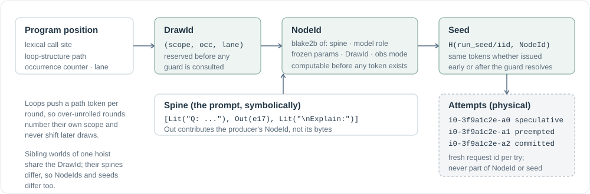

Identity and guards¶
Two questions decide whether speculation is sound. Which request is this, so that running it early yields the same bytes as running it late? And under what condition may its result be kept? AgentIR answers the first with a content-addressed identity ladder and the second with a small guard algebra. Both live in agentir.core and are shared, unchanged, by the runtime, the serial reference interpreter, and the static compiler.

{kind=link}
The spine¶
A prompt is not a string. It is a canonical sequence of segments:
segment ::= Lit(atoms) constant atoms, known at trace time
| Out(node) the sampled output of engine node `node`
| Obs(tool_node, projection) one named projection of a tool result
spine ::= [segment, ...] adjacent Lits merged, empties dropped
Atoms are strings on the text wire and token-id tuples on the token wire; the IR treats them opaquely. The spine's content key hashes each Out as the producer's NodeId and each Obs as the pair (tool node id, projection id). That is why a continuation's key is computable before a single token of its producer exists.
The identity ladder¶
DrawId names one logical random draw. It is (scope, occ, lane): scope digests the lexical call site together with the loop-structure path, occ counts dynamic executions within that scope, lane indexes the k siblings of an expand. The tracer reserves it at the DSL call, on the tracer thread, before it looks at any guard. Reserving at trace time is the load-bearing choice: it makes identity a function of program position alone, never of resolution timing.
Loops matter here. Each round of loop (and each tool-loop turn, and each call slot) pushes a path token, so an over-unrolled round consumes occurrences only inside its own scope. A draw made after the loop gets the same DrawId no matter how far ahead the tracer ran.
NodeId is a blake2b digest of the canonical descriptor: spine, model role, frozen sampling parameters, DrawId, and observation mode ("", "logprobs", or a stream projection identity). Everything the request is, nothing about how it runs. The hash is factored into named chunks (lit_chunk, out_chunk, node_identity_tail, finalize_node_id) so the static compiler can precompute the constant part and finalize later with the dynamic hole digests, byte for byte the same stream.
Seed is H(run_seed / invocation_id, NodeId). A node samples the same tokens whether it is issued speculatively or after its guard resolved. The problem_key you pass to run is a log label and enters no key; invocation_key scopes seeds, so benchmark arms that must sample the same tokens pass the same one.
Attempt is a physical engine request with a fresh id i{iid}-{node}-a{n}. Retries, preemptions, and engine restarts create new attempts of the same node. Attempts never enter NodeId or the seed, so "having tried a node early" can never change what it produces.
The only DrawId sharing in the system is across the mutually exclusive world instances of one hoist: one logical draw, several guards, at most one commit. Siblings share the draw but not the NodeId, because their spines differ, so the shared draw never licenses adopting one world's bytes into another.
Sampling parameters are part of identity¶
Every parameter is validated and canonicalized before hashing. The engine adapter maps or rejects each field; a key vLLM would silently drop must never enter identity. The accepted set is max_tokens, temperature, top_p, top_k, min_p, logit_bias, stop, stop_token_ids, repetition_penalty, frequency_penalty, presence_penalty, logprob_topk, skip_special_tokens, include_stop_str_in_output, structured. Structured constraints are re-serialized deterministically so whitespace drift cannot split identity.
Tool identity¶
A TNode hashes tool name, canonical JSON arguments, DrawId, and effect class. It excludes the projection: how a program reads an observation is not a property of the execution. Projections have their own content identity (name plus a descriptor of the callable), so two projections of one body are two Obs segments over one T-node, and adding a projection never re-executes a body.
Decisions¶
A Decision is an unresolved selection event. choose creates one with pool keys and k; gate creates one with the two members @gate:true and @gate:false. Resolution is terminal and exactly once: either resolve(slots) with validated positions, or fail(cause). The two are distinct on purpose. A failed decision surfaces its cause to consumers; an empty resolution squashes silently.
Rankings are validated before they become resolutions: integers only, in range, no duplicates, at least k of them. An invalid ranking fails the decision, and the failure surfaces at its consumers exactly where the serial program would have raised.
A decision also carries its own entry guard: the world in which the decision itself exists. A decision inside a losing branch never exists, and its literals read as false rather than as its own failure.
Guards: a conjunction of literals¶
A guard is a set of atoms At(d, r, s): "decision d's resolution has length greater than r, and its r-th slot is member s". A guard is one conjunction, one world. There is no disjunction and no merging of worlds a cleverer system might share; two instances a cleverer system would merge are simply two instances, mutually exclusive, at most one of which commits.
Evaluation is four-valued:
| Value | Meaning |
|---|---|
| pending | some literal's decision (or that decision's entry guard) is unresolved |
| true | every literal holds |
| false | some literal is contradicted, or two literals name different members for the same (d, r) |
| failed(cause) | a deciding computation raised, and nothing masks it |
The conjunction rule is short-circuit evaluation lifted to speculation:
AND: any false → false
else any pending → pending
else any failed → failed (cause = the failed decision with the smallest creation ordinal)
else true
False dominates failed because a false conjunct makes the world unreachable: in the source program the failing computation would never have run, so its exception must be unobservable. Pending precedes failed because a still-pending conjunct may yet turn false and erase the failure. When several conjuncts fail, the surfaced cause is chosen by stable decision order, never by which one finished first, so the observed exception cannot depend on a race.
Two derived quantities drive scheduling. guard_depth counts the distinct decisions whose literals are still pending on a guard; the window W bounds it. rank_sum adds the literal ranks; a rank-0 world is structurally more likely to commit than a rank-2 world, so it is funded first.
canon_guard drops literals already evaluated true, so a resolved-true prefix collapses out of a chain and a deep continuation's guard shrinks as decisions land. It never drops pending, false, or failed literals.
In the code¶
core/ir.py:DrawId,DrawLedger,ENode,TNode,make_enode,derive_seed, the chunk encoders,canonical_tool_args.core/guards.py:Decision,At,guard_state,literal_state,canon_guard,guard_depth,rank_sum,validate_ranking.execution/engine.py:validate_paramsand the parameter contract.- Tests:
test_ir.py,test_guards.py,test_failure_propagation.py,test_params.py.
Next: The tracer puts these pieces together at trace time.